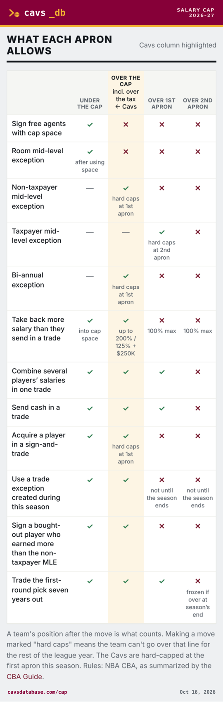

Share + capture
Two small icons in the top-right corner of a section header. Nothing else on the page changes.
Link icon = share. Camera icon = save as image. They're grey until you hover, so they don't compete with the content.
Cap position
Cavaliers Depth Chart
On a phone: the normal iPhone/Android share sheet opens (Messages, X, copy, etc.) with the link to that exact section.
On a computer: the link copies and this pops up for two seconds:
✓ Link copiedLinks go straight to the spot, not just the page:
- cavsdatabase.com/cap#aprons
- cavsdatabase.com/roster#depth
- cavsdatabase.com/roster#donovan-mitchell opens his player card
- cavsdatabase.com/assets#2028-1st opens that pick
This comes from each page's title and the share image that are already live. Every page gets its own title. The image is the same for all pages for now. I could make one image per page later (cap, roster, picks…).

How it looks on X
Tap the camera and you get a clean, branded picture of that box: wine header with the logo, the box itself, and the page link and date at the bottom. On a phone it opens the share sheet so you can tap “Save Image” or post it straight to X. On a computer it downloads a PNG. It's made in your browser, so it's instant and costs nothing.

Real output from the apron chart, made from the live page.
Boxes that would get the camera:
- Depth chart (chart and pyramid)
- Player card (photo, bio, stats)
- Cap sheet and cap position
- What each apron allows
- Draft picks owed / owned, and the pick routing
- Trade exceptions
- East standings
- This day in Cavs history
- A game's line in the schedule (final score card)
Why a small icon instead of a big button: people who want it find it fast, and everybody else never notices it. A big “Download” button on every box would clutter the pages.
One behind-the-scenes step: NBA.com doesn't let other sites copy its player photos into images. So the site would keep its own copy of each headshot, refreshed by the same job that updates videos. The page looks the same.